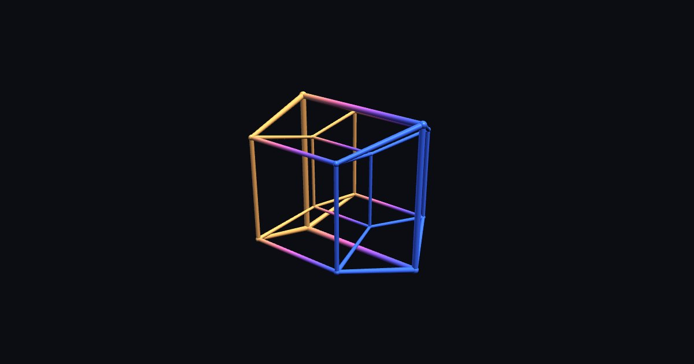

Math Explorer · 4D Polytopes
4D Polytopes: see the tesseract and shapes from the fourth dimension
The tesseract, the 120-cell and their cousins, turning through a fourth dimension you can almost see.

Start exploring 4D Polytopes →
We can't see four dimensions, but we can watch their shadows. A cube casts a square shadow; a tesseract (a 4D cube) casts a cube-shaped shadow with a cube inside it, and as it turns through the fourth dimension the inner cube swaps places with the outer one. Math Explorer shows all six regular 4D shapes, and many more, turning smoothly in four dimensions.
You can slice a shape with a 3D "knife" to see its cross-sections change, unfold it into a net of 3D cells (as a cube unfolds into six squares), build it up cell by cell, and fly through it. The shapes can be drawn as edges, as touching balls or as a foam of bubbles, and exported for 3D printing.
Things to try
- Watch the tesseract turn and the inside cube swap with the outside one
- Slice the hypersphere and see its cross-sections grow and shrink like a 3D MRI scan
- Unfold a 4D shape into its net of cells
- Press G to fly inside the 120-cell
- Draw a shape as a bubble foam on the 3-sphere
Start exploring 4D Polytopes →